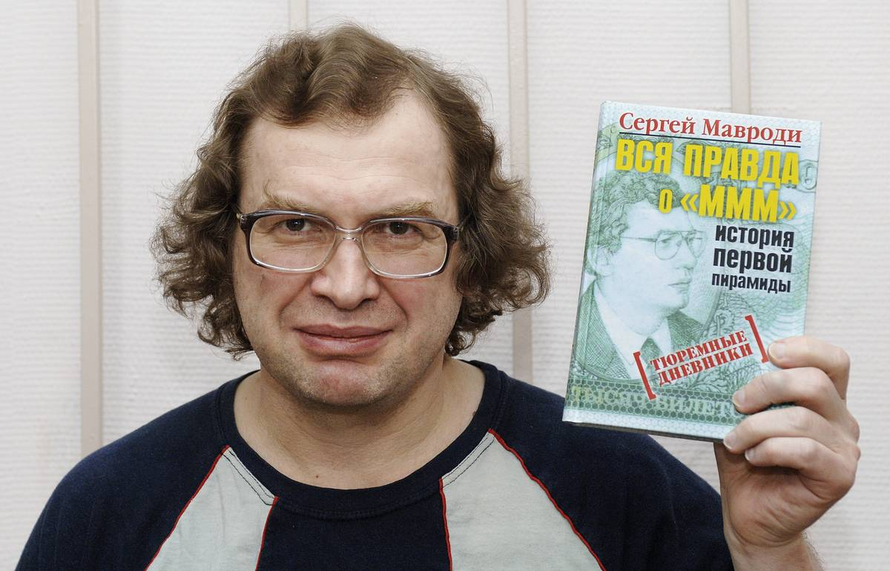

Родился и вырос я в небольшомгороде Новая Каховка на юге Украины. Это Херсонская область. Мама - учительница русского языкаи литературы. Папа - инженер программист / электрик. (на фото) Обычная интеллигентная семья. Жили скромно. Не могу сказать, что в моих детских годах было что-то особенное, поэтому не буду перегружать вас подробностями того времени.
Отец, видя что я буду высоким и худым, предложил мне вариант в котором я получаю карманные деньги за прочитанные страницы книг и армейские отжимания на кулаках от пола. Считаю этот ход одним из самых удачных в моем воспитании, потому что я подсел на художественную, а потом и на бизнес литературу. Книги Роберта Киосаки, Ренди Гейджа, Бодо Шеффера очень сильно повлияли на мою картину мира и на мое видение будущего. Если бы отец вовремя не подсунул мне «Богатый папа, бедный папа», моя жизнь могла бы сложиться совершенно иначе.
Мама всегда была у нас «добрым полицейским» и просила папу не наказывать меня, если я где-то накосячил. Она всегда готовила невероятно вкусную еду и сколько ее помню, моталась между 2-мя дачами, рынком и плитой. Благодаря ее жертвенности у меня в детстве было хорошее здоровье. Вообще могу сказать что вырос в автосфере любви и заботы.

Первыми книгами (вне школьной программы), которые я прочитал были: - Макаренко «Педагогическая поэма» - Рафаэлло Джованьоли «Спартак» И если Макаренко я себя заставлялчитать, то после первой сцены Спартака, где он остался 1 против 4 галлов в Колизее, и смог их победить, я влюбился в мир литературы. Любимыми писателями стали Джек Лондон, Теодор Драйзер и Эрих Ремарк. Чтение открыло для меня удивительный новый мир.
В 2006 году, будучи девятиклассником, когда я возвращался со школьной дискотеки (слегка выпивший и прокуренный), чувствуя себя крайне отвратительно, я принял решение никогда больше не пить и не курить. Устал вредить своемуорганизму. С того момента алкоголь и табак навсегда ушли из моей жизни. Считаю это одним из лучших решении того времени.
Примерно в 8-9 классе я начал увлекаться баскетболом и наш школьный учитель физкультуры направил меня в секцию баскетбола. Я полюбил игру и у меня неплохо получалось. К концу 11-го класса, я уже был капитаном городской команды. Так же в нашем зале, рядом с баскетбольной площадкой, была тренажерка и я впервые начал заниматься в качалке. Постепенно, спорт вошел в мою жизнь как неотъемлимая ее часть.

Поскольку карманных денег мне катастрофически не хватало, я искал любые возможности заработка. Первые деньгия смог заработатьв б-м классе. Мы с одноклассником записывали на диски игры и программы и продавали по 2 грн. Чистый диск стоил тогда около 25 копеек, поэтому получалось выгодно. Все заработанные деньги тратил на игротеки. В то время компьютер дома былу 1-го школьника из З0-ти.
Потом, в 9-м классе я уже был посредником между нашим классом и фотографом, который делал выпускные альбомы. Так я заработал первые 300 грн. «головой». Каждое лето между 6 и 11 классомя где-то работал:
Я шел на все собеседования, которые мне назначали и всегда удивлялся, почему взрослые люди не могут найти себе работу.

На фото со мной Олег Молош. Он был первым предпринимателем, кто рассмотрел во мне потенциали решил инвестировать свое время в мое обучение. Мне было около16-17 лет, когда я познакомился с ним и это оказало огромное влияние на мое мышление. Одним из первых и главных уроков, которые мне преподал Олег - Слушать только тех людей, у кого есть моральное право давать советы. Посколькуя хотел стать бизнесменом, то советы всех «не бизнесменов» для меня потеряли большой вес. Так же Олег помог вырастить у меня в голове ростки системного мышления. Впервые я начал понимать, что лучше организовать работу других людей и получать с этого %, чем самому работать на 100%. Работая с Олегом на страхового брокера, я впервые в своей жизни начал проводить тренинги для своей команды. Мне это дико нравилось. Обучение людей стало моей стихией и остается главной миссией моей жизни по сей день.

Проработав в страховании 8 месяцев я получил потрясающий опыт, но денег так и не заработал. В конце 2011 года, когда мне было 20 лет, я узнал про такой продукт, как катализатор горения топлива. Он позволял любой машине экономить около 15-20% горючего. Хоть у меня не было своей машины, я все равно начал продавать этот продукт и строить сеть таких же продавцов под собой. Компания платила мне % за работу всех моих партнеров и уже в первый месяц у меня получилось заработать 1100$. После продажи страховок, этот продукт шел невероятно легко. После того, как стараешься продать человеку выплату по страховке через 20 лет, любой другой товар будет продавать очень просто. Дела мои пошли в гору. Я начал записывать свои первые видео для ютуб канала. Поехал на спецтренинг для партнеров (на фото) и даже занялся «инвестициями». Когда ты строишь под собой потребительскую сеть, то достаточно быстро понимать принцип финансового рычага. Ты находишь людей, обучаешь их, мотивируешь. У них такие же условия для заработка денег, как и у тебя. Они работают на себя и стараются преуспеть. Ты же получаешь деньги, за весь товарооборот твоей команды. Впервые я почувствовал, что такое пассивный доход. Это было круто, но не долго. Продукт компании работал через раз, были проблемы с поставками, руководство компании принимало странные для нас решения. В итоге, я перешел в компанию конкурент, но и она через год прекратила свою работу. На тот момент в моей сети было больше 660 человек. Было больно, поэтому я зарекся большене связываться с сетевыми бизнесом. Мне надоело что кто-то может принять решение, которое убивает мои предыдущие усилия.
Мой куратор в сетевом бизнесе по катализатору топлива еще был и десятником в системе МММ2011. В то время вокруг этой пирамидыбыл дикий хайп. Платили 40% в месяц на любой вклад и 10% реферальный бонус, если ты кого-то привлекал под себя. Мне было всего 20 лет и опыта потери денегв подобных проектах не было. Начал вкладывать в МММ и через пару месяцев нашел еще один хайпик, который платил 100% в месяц. Начав со 100$ я быстро довел свой «портфель» до 10 000$ из которых 5 000$ были заработаны уже внутри проектов, а 5 000$ были одолжены у людей и банков. Потом пришел июль 2012 года и в один месяц оба проекта закрылись. Я остался должен около 40 000 грн, что по тем временам было для меня неподъемной суммой. Сетевой бизнес в тот период приносил мало денег, потому что я им почти не занимался. Зачем?! Ведь тысячи долларов капали процентами по «инвестициям». Постепенно я стал отдавать долги и начал с банков, где были %. Мой друг одолжил мне 2000$, чем буквально спас меня от очень больших проблем с одним заемщиком. Целый год я отдавал долги и за это время понял - любая ситуация, когда кто-то другой принимает решение по твоим деньгам - проигрышная для тебя. Когда-то мне это пытался объяснить мой наставник Ростислав, но я его не услышал. Я думал что он просто взрослый и слишком боится рисковать. Со временем я понял, что не Ростислав был динозавром, а я был глупым.
Когда сетевая компания по катализатору топлива ушла с рынка, долги были в процессе погашения, у меня стал вопрос, чем заниматься дальше и как зарабатывать. Мой товарищ Сергей Потехин нашел на фрилансе заявку от одной женщины, которой нужно было помочь в развитии Ютуб канала. У нас был небольшой опыт в этой сфере, и мы продали ей консультацию за 150$. Потом она связала нас с ее работодателем и мы начали вести его канал YouTube и группу VK. Получали мы 1000$ в месяц на двоих. Работа занимала пару часов в неделю. Через этого клиента мы вышли на других людей в инфобизнесе и начали оказывать им услуги по продвижению в интернете. Мы сами учились в процессе этой работы и часто бывало, что перед созвоном с клиентом, смотрели ролик в ютубе по той теме, которую должны были через 30 минутв скайпе продать клиенту.Такой авантюризм браться за малознакомую работу играл нам на руку. Мы быстро учились и зарабатывали. Мы шли отзапроса к запросу. Нас спрашивают - Вы сайты делать умеете? Мыговорим - «Да»и тут же ищем человека по сайтам. А что на счет рекламы в соц. сетях? - «Сделаем». И так за несколько лет мы охватили весь спектр услуг в интернете и обросли нужными знаниями и специалистами. Даже зарабатывали на съемке сценарных роликов. Вот наш первый коммерческий ролик. Мы впервые набирали актеров, делали грим, придумывали сценарий, искали оператора. Нам дико понравилось и мы потом сняли еще не одну работу. Оказание услуг по продвижению в интернете на много лет стало моим основным источником заработка.
9 июня 2014 года (на фото), через социальные сети, я собрал первую группу ребят, которые хотели расти и развиваться. Для начала я брал темы связанные с личностным ростом. Сначала тренинги были бесплатными, но через пару месяцев я начал брать символические 30-40 грн, чтобы оплачивать аренду помещения и расходы, связанные с обучением. Очень быстро я понял, что это дело всей моей жизни и обучать людей у меня получается лучше, чем все остальное. Когда ты 3 раза в неделю одним и тем же людям проводишь тренинги, ты не можешь все время говорить одно и то же. Ты должен развиваться и расти быстрее чем вся группа. Поэтому для меня это стало сильнейшим катализром личностного роста и у меня пропал всякий страх перед публичными выступлениями. Я сотни часов провел на "сцене", говоря публично.